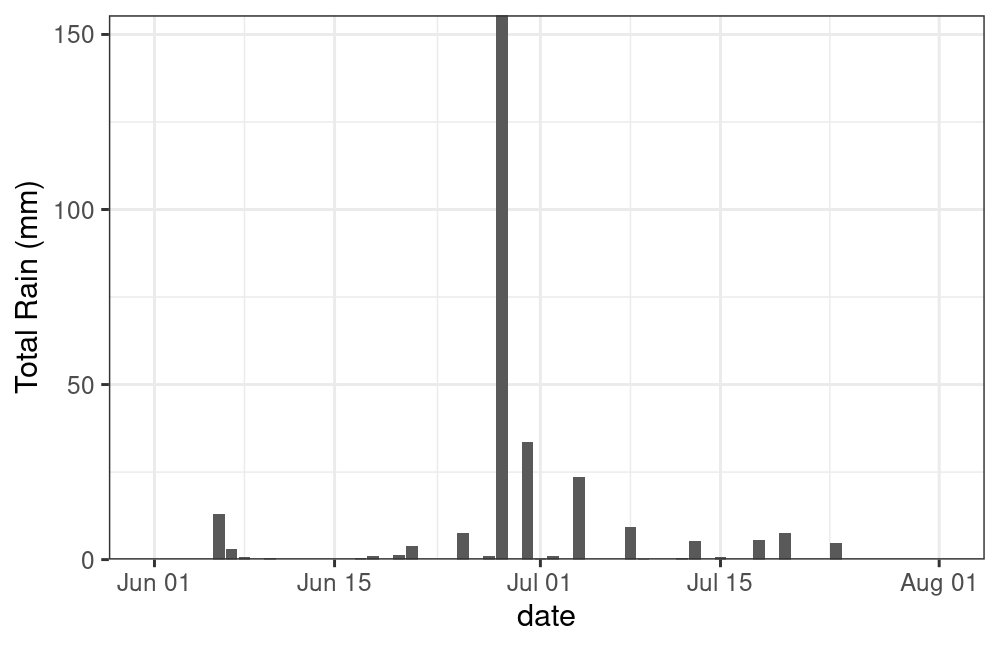
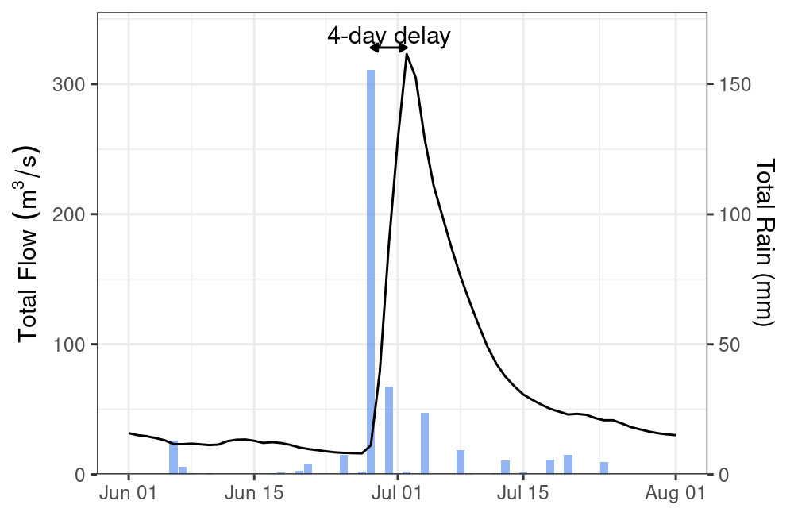
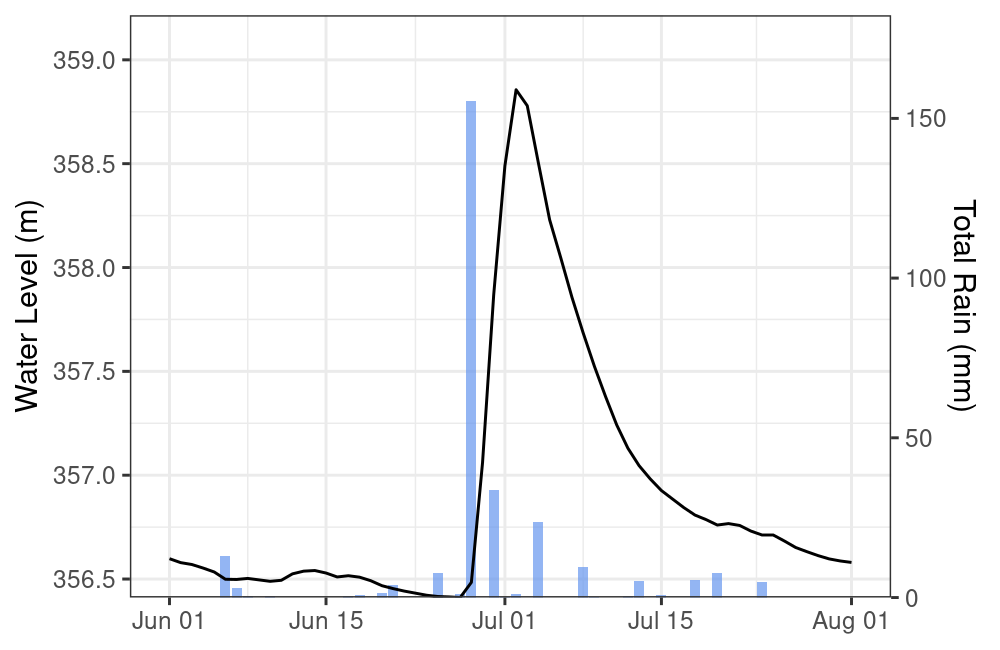
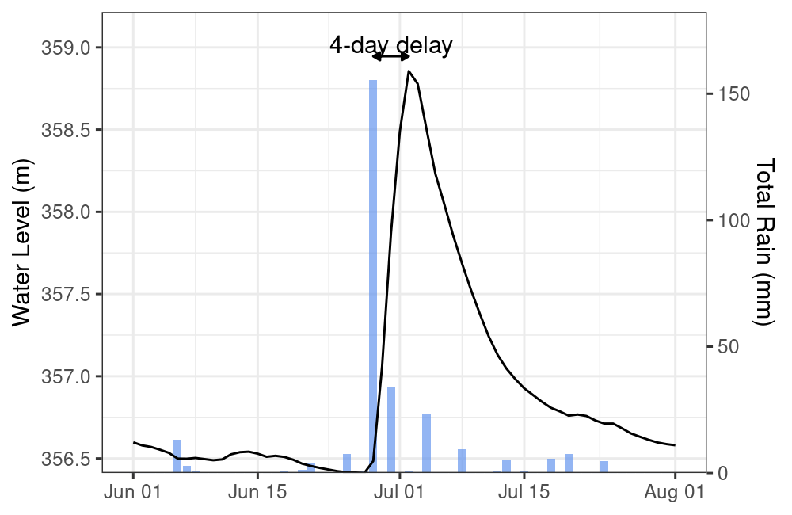
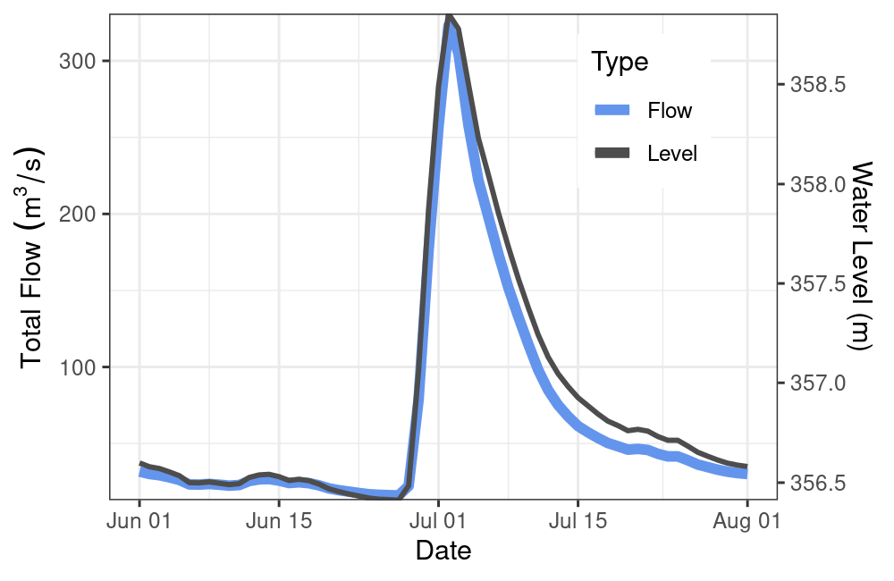

weathercan and tidyhydat
Steffi LaZerte
2021-11-30
Source:vignettes/articles/tidyhydat.Rmd
tidyhydat.Rmdtidyhydat is another R package for accessing data from ECCC. In this case, tidyhydat gives access to the National Water Data Archive (HYDAT).
HYDAT contains lots of data including stream flow (historical and real-time), water levels, station metrics and information on data types and codes.
Here we’ll go through a brief example of how hydrology data from tidyhydat can compliment weather data from weathercan (and vice versa).
Setup
Exploring climate and hydrology
In the summer of 2020, my region (Brandon, Manitoba) experienced an incredibly heavy rain fall event. Our downspout was ripped off the gutter and many people in the area experienced flooding as rain poured into their basements.
Let’s take a look at how this event was captured by weather and hydrometric stations monitored by ECCC.
The event occurred in late June/early July, so let’s give ourselves a two-month range.
dates <- c("2020-06-01", "2020-08-01")We’ll find a local Brandon weather station that has daily data for this range
stations_search("brandon", interval = "day",
starts_latest = 2020, ends_earliest = 2020)## # A tibble: 2 × 16
## prov station_name station_id climate_id WMO_id TC_id lat lon elev tz interval start end normals
## <chr> <chr> <dbl> <chr> <dbl> <chr> <dbl> <dbl> <dbl> <chr> <chr> <dbl> <dbl> <lgl>
## 1 MB BRANDON A 50821 5010481 71140 YBR 49.9 -100. 409. Etc/GMT+6 day 2012 2021 FALSE
## 2 MB BRANDON RCS 49909 5010490 71136 PBO 49.9 -100. 409. Etc/GMT+6 day 2012 2021 FALSE
## # … with 2 more variables: normals_1981_2010 <lgl>, normals_1971_2000 <lgl>In this case “A” is for “Airport”, let’s go with that!
rain <- weather_dl(station_ids = 50821, interval = "day", start = dates[1], end = dates[2])Take a quick look:
ggplot(data = rain, aes(x = date, y = total_rain)) +
theme_bw() +
geom_bar(stat = "identity") +
scale_y_continuous(name = "Total Rain (mm)", expand = c(0,0))
Yikes! You can see why my downspout came off!
Now let’s get some HYDAT data to compare. First we’ll find a local station
search_stn_name("brandon")## # A tibble: 4 × 5
## STATION_NUMBER STATION_NAME PROV_TERR_STATE_LOC LATITUDE LONGITUDE
## <chr> <chr> <chr> <dbl> <dbl>
## 1 05MH001 ASSINIBOINE RIVER AT BRANDON MB 49.9 -100.
## 2 05MH006 LITTLE SOURIS RIVER NEAR BRANDON MB 49.7 -99.8
## 3 02OC007 MASKINONGE (LAC) A SAINT GABRIEL DE BRANDON QC 46.3 -73.4
## 4 05MH013 ASSINIBOINE RIVER NEAR BRANDON MB 49.9 -100.There are a couple of options, but whoops, one’s from Quebec! Let’s filter this to only Manitoba and only stations with 2020 data with the hy_stn_data_range() function.
search_stn_name("brandon") %>%
filter(PROV_TERR_STATE_LOC == "MB") %>%
pull(STATION_NUMBER) %>%
hy_stn_data_range() %>%
filter(Year_from <= 2020, Year_to >= 2020)## Queried from version of HYDAT released on 2021-10-19
## Observations: 2
## Station(s) returned: 1
## Stations requested but not returned:
## All stations returned.
## # A tibble: 2 × 6
## STATION_NUMBER DATA_TYPE SED_DATA_TYPE Year_from Year_to RECORD_LENGTH
## <chr> <chr> <chr> <int> <int> <int>
## 1 05MH001 H <NA> 2014 2020 7
## 2 05MH001 Q <NA> 1906 2020 75Hmm, let’s see what kind of data is available by looking at the included hy_data_types data frame.
## # A tibble: 2 × 3
## DATA_TYPE DATA_TYPE_EN DATA_TYPE_FR
## <chr> <chr> <chr>
## 1 H Water Level Niveaux d'eau
## 2 Q Flow DebitGreat! We have both flow and water level data for a station number “05MH001”, “Assiniboine River at Brandon”.
Let’s grab the flow and water level data for this station.
flow <- hy_daily_flows(station_number = "05MH001",
start_date = dates[1], end_date = dates[2])
level <- hy_daily_levels(station_number = "05MH001",
start_date = dates[1], end_date = dates[2])Ploting rain and flow
g <- ggplot() +
theme_bw() +
theme(axis.title.x = element_blank()) +
geom_bar(data = rain, aes(x = date, y = (total_rain * 2)), stat = "identity",
alpha = 0.7, fill = "cornflowerblue") +
geom_line(data = flow, aes(x = Date, y = Value)) +
scale_y_continuous(name = bquote(Total~Flow~(m^3/s)), expand = c(0, 0),
limits = c(0, max(flow$Value * 1.1)),
sec.axis = sec_axis(trans = ~ . / 2, name = "Total Rain (mm)"))
g
Interesting, looks like there’s a bit of a lag between the rain event and the dramatic increase in water flow in the Assiniboine (unsurprisingly, this is called “lag to peak”).
Let’s add a bit of information about this lag to peak.
d <- data.frame(dates = c(rain$date[which.max(rain$total_precip)],
flow$Date[which.max(flow$Value)]),
y = max(flow$Value) + 5)
g +
geom_path(data = d, aes(x = dates, y = y),
arrow = arrow(length = unit(0.25, "lines"), ends = "both", type = "closed")) +
annotate(geom = "text",
x = d$dates[1] + (d$dates[2] - d$dates[1])/2,
y = d$y[1] + 10,
label = glue("{d$dates[2] - d$dates[1]}-day delay"))
We can expect a lag like this because much of the flow being captured by the Brandon HYDAT station is from precipitation in the upstream catchment area (not only from local contributions), which takes time to travel.
Ploting rain and water level
g <- ggplot() +
theme_bw() +
theme(axis.title.x = element_blank()) +
geom_bar(data = rain,
aes(x = date, y = (total_rain/65) + min(level$Value)),
stat = "identity", alpha = 0.7, fill = "cornflowerblue") +
geom_line(data = level, aes(x = Date, y = Value)) +
scale_y_continuous(name = "Water Level (m)", expand = c(0, 0),
sec.axis = sec_axis(trans = ~ (. - min(level$Value)) * 65,
name = "Total Rain (mm)")) +
coord_cartesian(ylim = c(min(level$Value), max(level$Value)*1.001))
g
Again there looks to be a lag, let’s see if it’s the same as before.
d <- data.frame(dates = c(rain$date[which.max(rain$total_precip)],
level$Date[which.max(level$Value)]),
y = max(level$Value)*1.00025)
g +
geom_path(data = d, aes(x = dates, y = y),
arrow = arrow(length = unit(0.25, "lines"), ends = "both", type = "closed")) +
annotate(geom = "text",
x = d$dates[1] + (d$dates[2] - d$dates[1])/2,
y = d$y[1] * 1.0002,
label = glue("{d$dates[2] - d$dates[1]}-day delay"))
Ploting flow and water level
Looks like the flow and water level match up, perhaps we should take a closer look.
ggplot() +
theme_bw() +
theme(legend.position = c(0.8, 0.8)) +
geom_line(data = flow, aes(x = Date, y = Value, colour = "Flow"),
size = 2) +
geom_line(data = level, size = 1,
aes(x = Date, y = (Value - min(Value) + 0.1) * 130, colour = "Level")) +
scale_y_continuous(bquote(Total~Flow~(m^3/s)), expand = c(0, 0),
sec.axis = sec_axis(trans = ~ ./130 + min(level$Value) - 0.1,
name = "Water Level (m)")) +
scale_colour_manual(name = "Type",
values = c("Flow" = "cornflowerblue",
"Level" = "grey30"))
Almost a perfect match between water level and flow (which makes sense).
Hopefully this short article gives you a sense of how you might combine different types of ECCC data gathered via different R packages for a more comprehensive look at the world around.